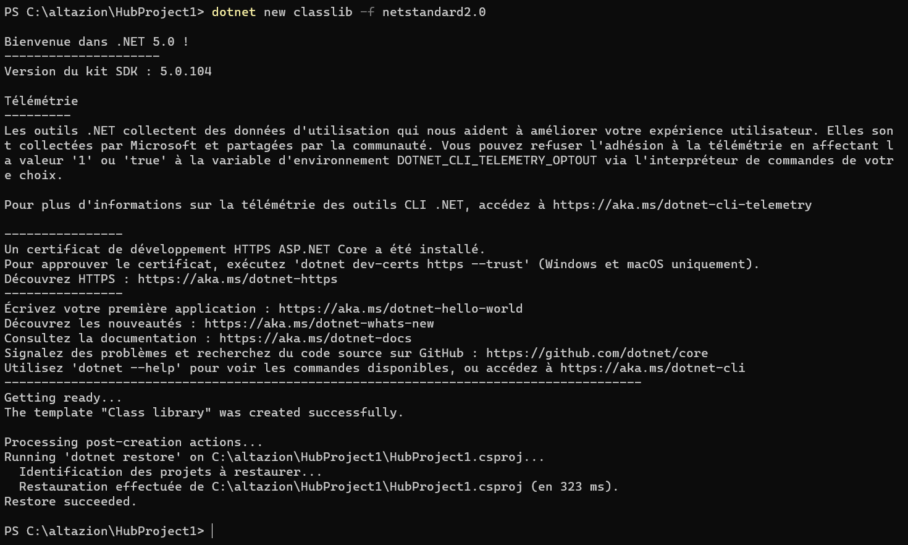
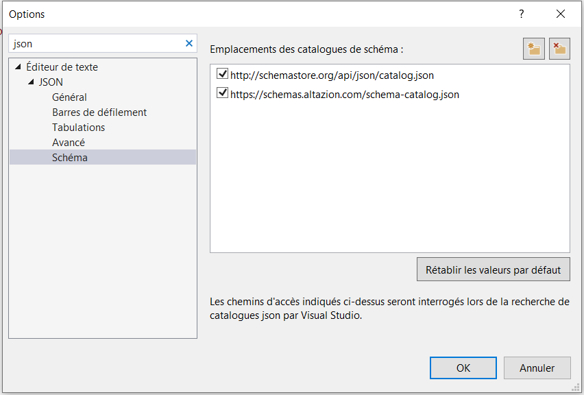

Extensibilité Altazion Hub
Développer un module
using Altazion.Hub.Common;
using System;
using System.Collections.Generic;
using System.Text;
namespace Altazion.Hub.Modules.Exemple
{
public class ExempleModule : IAltazionHubModule
{
bool IAltazionHubModule.Execute()
{
return false;
}
void IAltazionHubModule.Init(IAltazionModuleHost host, string init)
{
}
bool IAltazionHubModule.Poll()
{
return false;
}
public string ExecuteCommand(string command, string parameters)
{
return "OK";
}
}
}
Créer le projet
Depuis la version 3.0, les modules Hub sont uniquement des composants développés en .net standard 2.0 et supérieur. Pour créer un nouveau module, créez tout simplement un projet assembly .net standard 2.0.
Dans Visual Studio, vous pouvez créer un projet de "Bibilothèque de classe .net standard 2.0".

Si vous utilisez un autre IDE, la commande
dotnet new classlib -f netstandard2.0
vous permettra de créer le projet.

Réferencer les nugets
Vous devrez ensuite ajouter les nugets Altazion Hub à votre projet.
Implémenter l'interface
Ecrire le fichier manifeste
Vous devrez ensuite écrire un fichier manisfest en json pour déclarer votre module auprès du service de déploiement. Ce fichier est nécessaire à la fois pour un déploiement sur un service Windows, un daemon Linux ou pour un déploiement via Docker, bien que son rôle soit légèrement différent en fonction de l'environnement.
Si vous utilisez Visual Studio, vous pouvez ajouter le catalogue de schéma de nos solutions dans votre IDE afin de pouvoir profiter d'Intellisense. Pour cela, allez dans le menu Outils>Options puis dans Editeur de texte > JSON > Schémas, et ajoutez notre catalogue de schémas :

https://schemas.altazion.com/schema-catalog.json
Packager et déployer
Pour Docker
=> se baser sur l'image altazion/hub-host => copier le contenu de votre module dans /app/bin/ de cette image => créer votre docker file
FROM altazion/hub-host:latest AS base
WORKDIR /app
COPY "./" /app/bin/
ENTRYPOINT ["dotnet", "Altazion.Hub.Host.dll"]
Pour service Windows ou SystemD linux
Ajouter un service API
Implémenter l'interface supplémentaire
Pour déclarer votre module comme exportant une API, il vous faudra implémenter une seconde interface au niveau de votre module : Altazion.Hub.Common.IAltazionHubWebModule
Warning
Vous devez impérativement implémenter les deux interfaces sur la même classe.
Ajouter le(s) controleur(s)
Vous aurez ensuite simplement besoin d'ajouter vos controlleurs Web API :
- Ajoutez une référence au nuget
Microsoft.AspNetCore.Mvc.Coreafin d'importer tous les types nécessaires - Puis créez une ou plusieurs classe(s) de type controleur Web API :
[Route("api/demo"), ApiController]
public class MonController : ControllerBase
{
[Route("methode1"), HttpGet]
public string Methode1()
{
return "OK";
}
}
Implémenter une fonctionnalité spécifique
| Zone | Fonctionnalité |
|---|---|
| CRM | Base données clients |